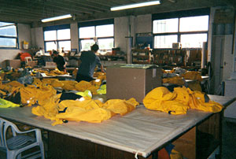

Neck and wrist seals
The usual failure point. Latex and neoprene seals perish with age, sunscreen and stretching — replacement is routine.
Drysuits
Sealing fabric against water under pressure is the same discipline whether it's a tube or a suit. We service all types of leisure drysuit.
Accreditation
We are service agents for Musto UK/NZ and Line 7 New Zealand, and we service all types of leisure drysuit regardless of brand.
Over the years we have been the service agent for the Whitbread, the Volvo Round the World and the BT Global Challenge — campaigns where a failed seal is a genuine safety problem rather than an inconvenience.

The usual failure point. Latex and neoprene seals perish with age, sunscreen and stretching — replacement is routine.
Dry zips are the most expensive component on the suit and the most abused. Servicing, repair or replacement.
If you're getting wet and can't find where, that's exactly the kind of leak-tracing we do on tubes every day.
Tears, abrasion and seam failures repaired in the suit's own fabric system.
Attached boots and latex socks repaired or replaced where the suit design allows it.
Bring it in before the season rather than discovering the seal has gone on the first cold morning out.
We also repair dry bags and other sealed soft goods — ask if you have something that ought to be watertight and isn't.
Seals and zips are quick jobs when they're booked and slow ones when they're urgent. Ring us and describe the problem.